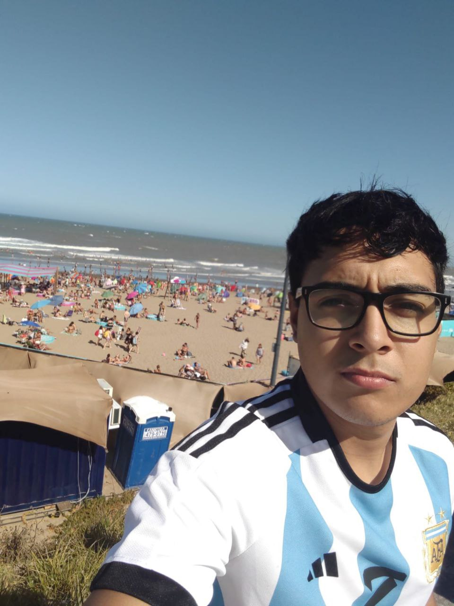

Acerca de mí
¡Hola! Soy Julian Ignacio y esta es mi historia.
Nací en Viedma y tengo 20 años. Actualmente vivo con mis padres y me dedico a mis estudios con mucha pasión y determinación.
Estudio desarrollo web en la Universidad del CURZA, donde cada día aprendo nuevas tecnologías y metodologías para crear sitios web modernos y funcionales.
Además de mi formación en desarrollo web, también estudio japonés de forma privada. El idioma y la cultura japonesa siempre me han fascinado, y dedicar tiempo a su aprendizaje es una de mis mayores satisfacciones.
Mi objetivo es combinar mis conocimientos en desarrollo web con mi pasión por la cultura japonesa para crear experiencias digitales únicas y significativas.
